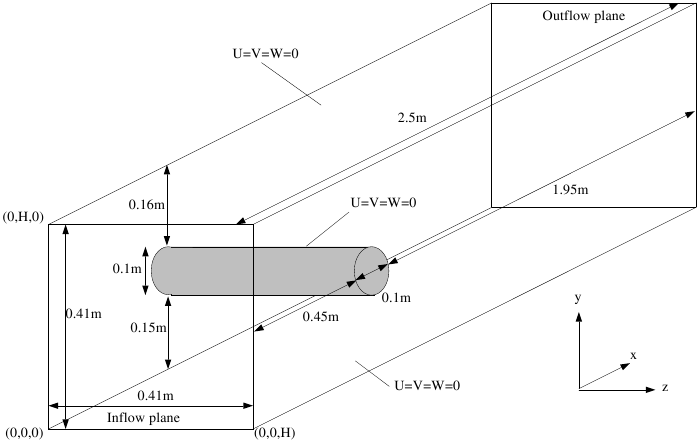
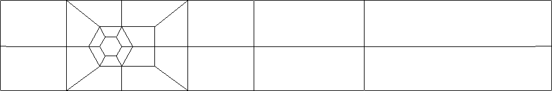

Benchmark configurations
The solvers are tested in two benchmark configurations with an incompressible Newtonian fluid whose kinematic viscosity (ν) is equal to 10-3 m2/s and for which the conservation equations of mass and momentum are written as follows,
![\begin{equation}\begin{split}
&\frac{\partial \mathbf{u}}{\partial t}
+\mathbf{u}\cdot\nabla \mathbf{u}=-\nabla p
+\nu\Delta\mathbf{u},\\
&\nabla\cdot\mathbf{u}=0
\end{split}
\label{NS}
\end{equation}]( "\begin{equation}\begin{split}
&\frac{\partial \mathbf{u}}{\partial t}
+\mathbf{u}\cdot\nabla \mathbf{u}=-\nabla p
+\nu\Delta\mathbf{u},\\
&\nabla\cdot\mathbf{u}=0
\end{split}
\label{NS}
\end{equation}")
The Reynolds number is defined as Re=UD/ν where U is the mean velocity of the imposed parabolic profile on the inflow boundary and D is the diameter of the cylinder. The benchmark geometry and the corresponding 2D mesh at the coarsest level are shown in the figure below. The 3D mesh is obtained by extruding the 2D mesh in the z direction with 4 layers of cells, however the first level mesh for the computations is obtained by two successive refinements via connecting opposite midpoints of the the coarsest mesh which yields a mesh of 6144 cells. Our preliminary studies showed that this mesh offers a good balance between accuracy and computational cost.


The software tools employ different numerical approaches to the discretization in space which leads to different numbers of degrees of freedom (DOF) for the same problem. In the case of OpenFOAM and CFX, the numbers of DOF are comparable while FeatFlow has a greater number of DOF for the same mesh due to a high order finite element approximation. Therefore, while comparing the results, reader should keep in mind that for the same computational mesh, FeatFlow has approximately as many DOF as the others have at one level finer grid. The number of DOF is always proportional to number of cells (equivalent to number of vertices for hexahedral meshes with large number of cells) in all CFD packages. The numbers of DOF are presented with respect to the number of cells of the corresponding mesh levels in the table below.
- ndof = 3 · nvt for velocity and ndof = nvt for pressure in case of CFX.
- ndof = 3 · nel for velocity and ndof = nel for pressure in case of OpenFOAM.
- ndof = 24 · nvt for velocity and ndof = 4 · nel for pressure in case of FeatFlow.
where ndof, nvt and nel denote the number of DOF, the number of vertices and the number of cells, respectively.
| Levels | # of cells | Software | # of DOF u | # of DOF P | total # of DOF |
|---|---|---|---|---|---|
| CFX | 21828 | 7276 | 29104 | ||
| L1 | 6144 | OF | 18423 | 6144 | 24567 |
| FeatFlow | 174624 | 24576 | 199200 | ||
| CFX | 160776 | 53592 | 214368 | ||
| L2 | 49152 | OF | 147456 | 49152 | 196608 |
| FeatFlow | 1286208 | 196608 | 1482816 | ||
| CFX | 1232400 | 410800 | 1643200 | ||
| L3 | 393216 | OF | 1179648 | 393216 | 1572864 |
| FeatFlow | 9859200 | 1572864 | 11432064 | ||
| CFX | 9647136 | 3215712 | 12862848 | ||
| L4 | 3145728 | OF | 9437184 | 3145728 | 12582912 |
| FeatFlow | 77177104 | 12582912 | 89760016 |
The first benchmark problem is at Re=20 and has been studied numerically by many research groups, and very accurate results have been presented. The second benchmark problem is unsteady, with a time-varying inflow profile which is very challenging and has not been rigorously studied, consequently the results have not yet been precisely determined. For the benchmark problems, no-slip boundary condition is employed on the walls and natural do-nothing boundary conditions are imposed at the outflow plane. The inflow conditions are set with U_m=0.45 m/s and U_m=2.25 m/s for the first and the second benchmark problem with the parabolic velocity profiles from equations (2) and (3), respectively,
![\setcounter{equation}{1}
\begin{equation}
U(0,y,z) = 16U_myz(H-y)(H-z)/H^4,\quad V=W=0
\label{parabolicProfile}
\end{equation}]( "\setcounter{equation}{1}
\begin{equation}
U(0,y,z) = 16U_myz(H-y)(H-z)/H^4,\quad V=W=0
\label{parabolicProfile}
\end{equation}")
![\setcounter{equation}{2}
\begin{equation}
U(0,y,z) = 16 U_m y z sin(\pi t/8) (H-y) (H-z)/H^4,\quad V=W=0
\label{parabolicProfileT}
\end{equation}]( "\setcounter{equation}{2}
\begin{equation}
U(0,y,z) = 16 U_m y z sin(\pi t/8) (H-y) (H-z)/H^4,\quad V=W=0
\label{parabolicProfileT}
\end{equation}")
where FD and FL are defined as,
![\setcounter{equation}{3}
\begin{equation}
F_D = \int \left( \rho \nu \frac{\partial v_t}{\partial n}n_y - p n_x\right) dS , \qquad
F_L = -\int \left( \rho \nu \frac{\partial v_t}{\partial n}n_x - p n_y\right) dS
\end{equation}]( "\setcounter{equation}{3}
\begin{equation}
F_D = \int \left( \rho \nu \frac{\partial v_t}{\partial n}n_y - p n_x\right) dS , \qquad
F_L = -\int \left( \rho \nu \frac{\partial v_t}{\partial n}n_x - p n_y\right) dS
\end{equation}")
with the following notations: surface of cylinder S, normal vector n on S with x- and y- component nx and ny, tangential velocity vt on S and tangent vector t=(ny,-nx,0).